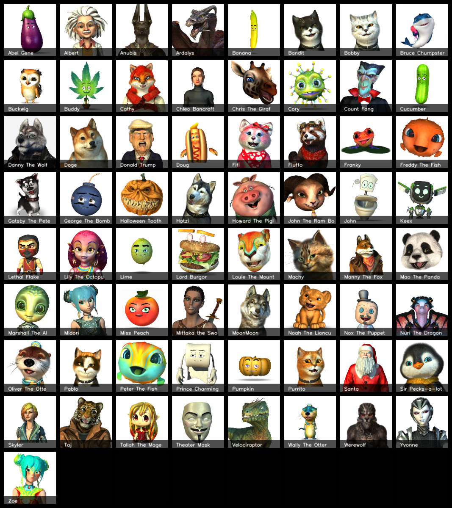

Animaze Desktop: Which avatars are Holotech original creations?
Complete list of Holotech Original avatars has moved to this dedicated page.
If you're interested in backgrounds, props, and other customizations, check out the dedicated list here.
Overview
